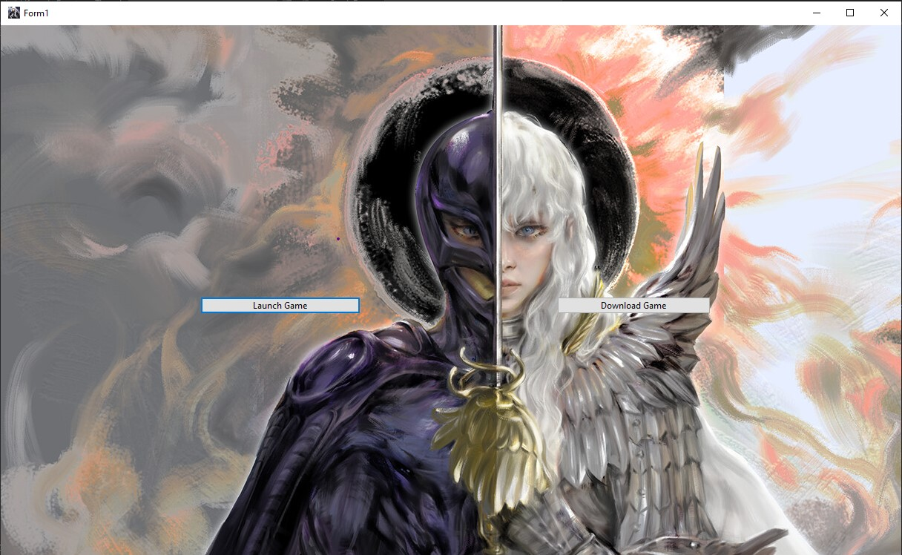
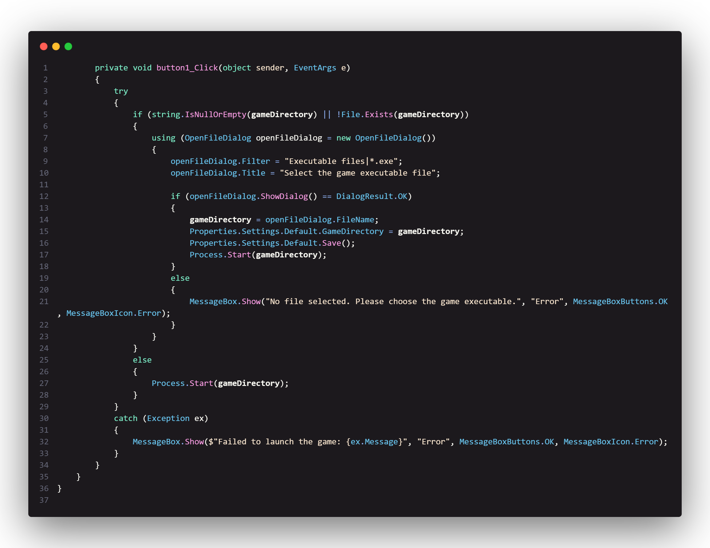
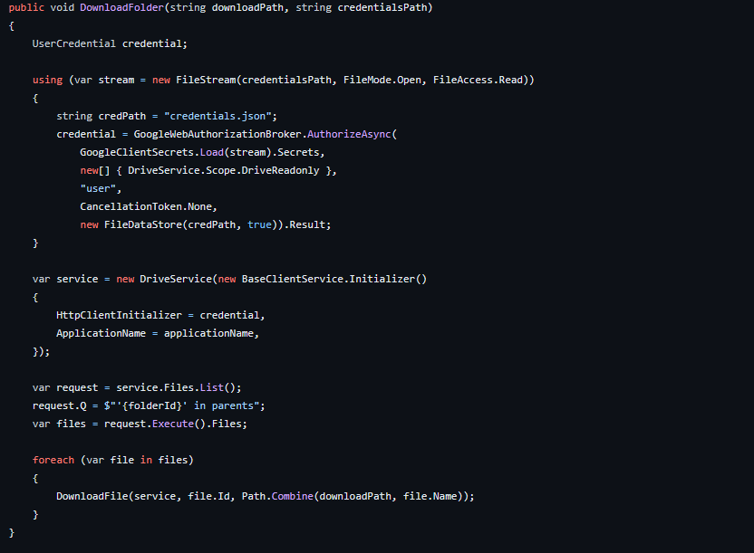

Project Status:
Project Type:
Project Duration:
Software Used:
Languages Used:
Primary Role(s):
Team:
Ongoing
Personal
1 Day
Visual Studio Community 2022
C#
Software Developer
1 Dev
This project showcases the development of a Software launcher application in C#. The primary objective of the application is to streamline the process of downloading, extracting, and launching .exe applications.
The development of the game launcher in C# was quite a challenge, but I managed to make some great strides. I chose C# initially because it works well with the Unreal Engine, which is what I used for the game. I had to work with the WebClient class and the GitHub API to make the downloading and extraction process smooth.
At the beginning, I had to set up the environment carefully and make sure the UI components were working smoothly. One of the trickiest parts was getting the download feature right. I had to figure out how to handle file downloads, extractions, and potential errors. Adding the SaveFileDialog was a game-changer because it made it possible for users to choose where to save their downloads.
Picture of Launcher
In the image you can see the styling I used and how the buttons look. (I made them simple)
As the development process unfolded, ensuring seamless compatibility of various components, including the progress bar, necessitated persistent troubleshooting and diligent debugging efforts. Moreover, the intricate handling of exceptions, notably the NullReferenceException, demanded a comprehensive understanding of the code's intricacies and meticulous attention to detail.
As we kept working, we ran into some issues with the progress bar and had to spend some time troubleshooting and debugging(The progress bar will be readded later). Dealing with exceptions like the NullReferenceException was a bit tricky, and we had to pay close attention to the details in the code.
The script of the download button
In the snippet you can see the code used for the download button
In the second snippet you can see the code used for the launch button
The technical integration of the Google Drive API within the existing codebase proved to be more complex than initially anticipated. It required additional external libraries and resources, which increased the complexity of the project.
The Google Drive API script
In the snippet you can see the entire code used for the Google Drive API
The Google Drive API did not provide seamless support for downloading and extracting ZIP files directly, which was a critical requirement for this project. This limitation hindered the smooth retrieval and extraction of game files from the Google Drive repository.
We also had some trouble with files getting locked during the build process. It taught us the importance of managing resources properly and handling file access carefully. We had to go deep into the build process to make sure nothing was causing problems.
Despite these challenges, we adopted an iterative approach, did a lot of testing, and learned a great deal about C# and the GitHub API. This project has really shown us the importance of perseverance, creative problem-solving, and paying attention to detail, especially in a college-level software development setting.